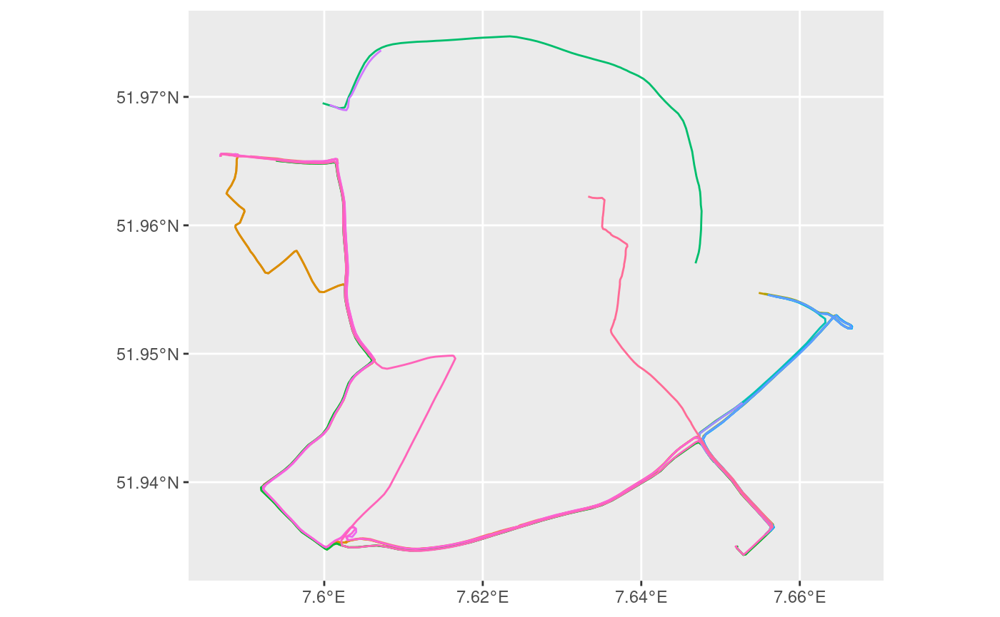
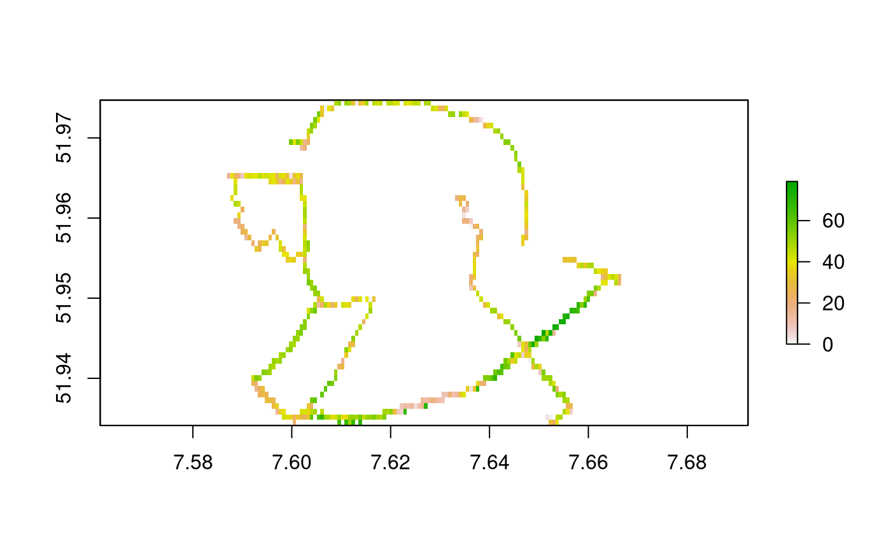
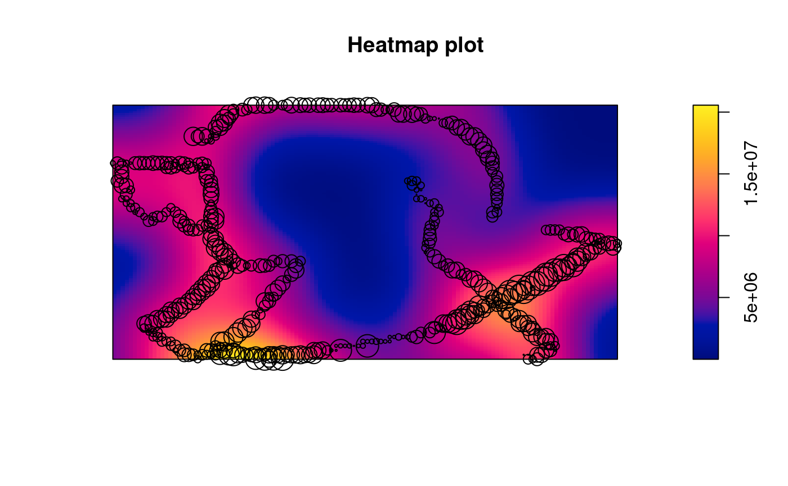
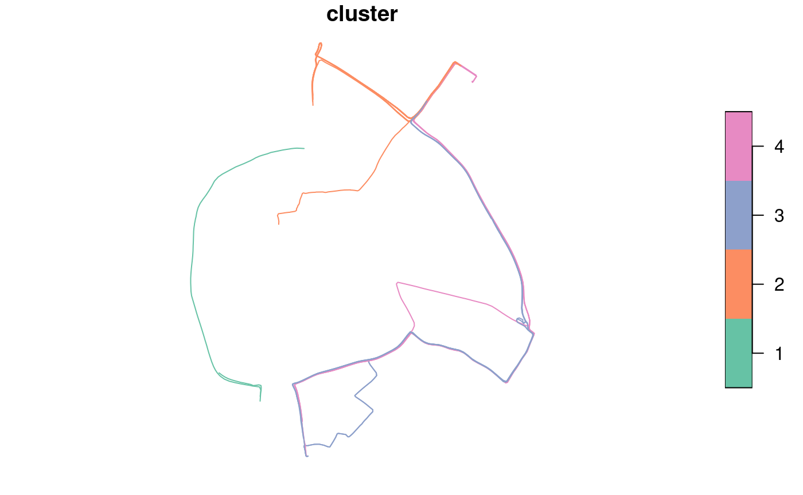
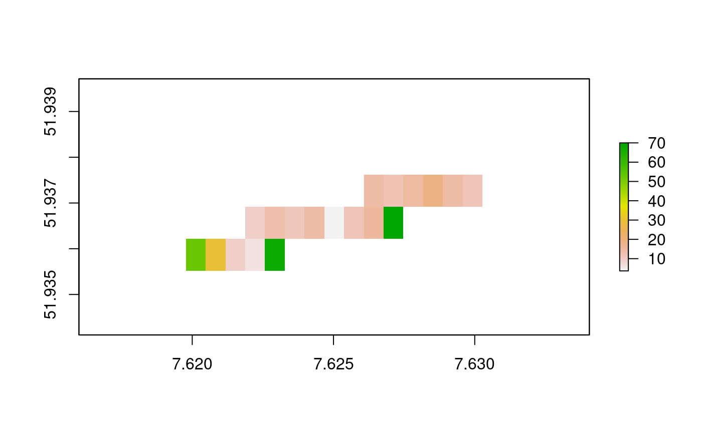
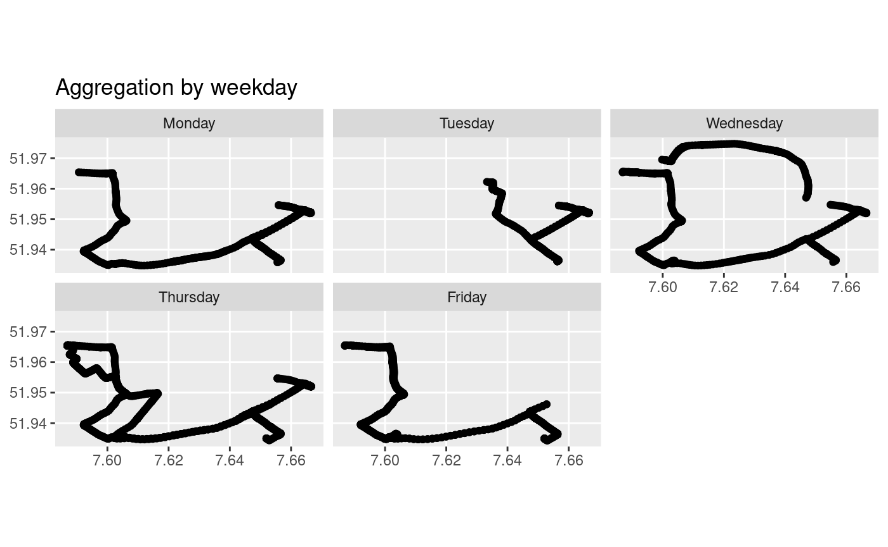
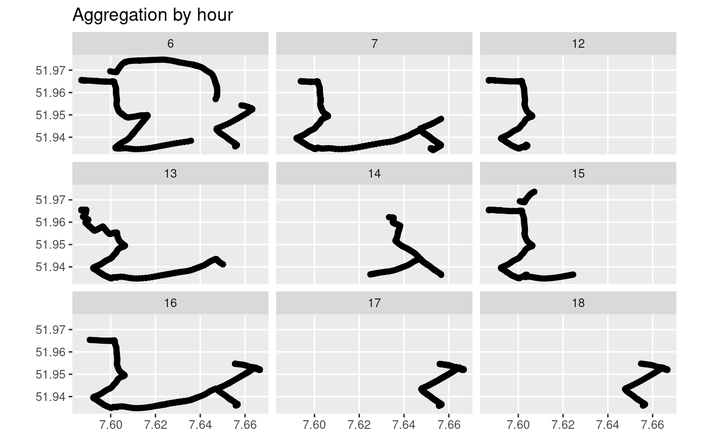
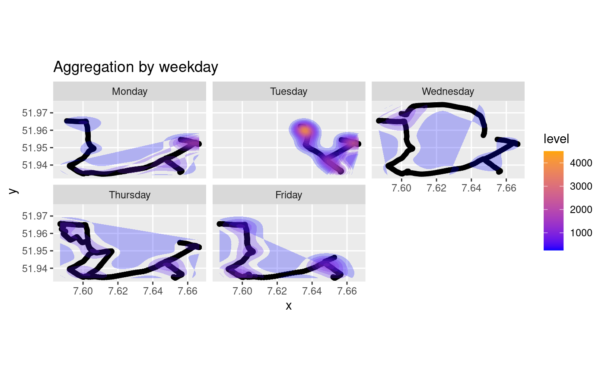
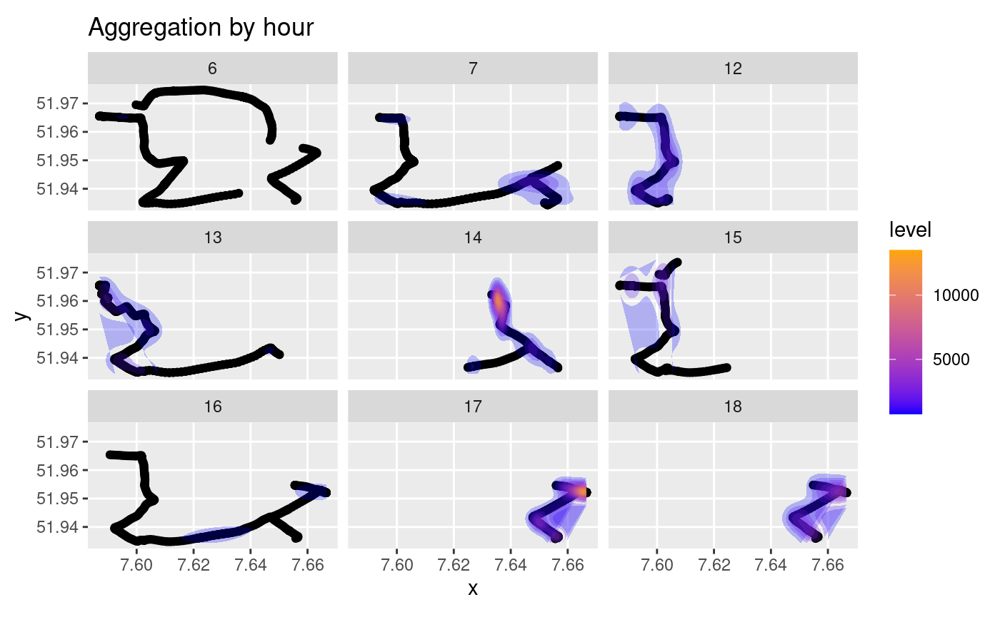

traviz is a package to meaningfully analyze and visualize trajectories in multiple ways. To showcase some of the features of traviz, we’ll use enviroCar trajectory data in Muenster, Germany. To collect enviroCar data, the envirocar-py package was used. Keep in mind traviz is not limited to vehicular trajectory data only and can work with all types of trajectory data.
library(traviz) #> Loading required package: sf #> Linking to GEOS 3.8.0, GDAL 3.0.4, PROJ 6.3.1 #> Loading required package: trajectories #> Loading required package: tidyverse #> ── Attaching packages ─────────────────────────────────────────────────────────────────────────────────────────────────────────────────────────────── tidyverse 1.3.0 ── #> ✓ ggplot2 3.3.2 ✓ purrr 0.3.4 #> ✓ tibble 3.0.1 ✓ dplyr 1.0.0 #> ✓ tidyr 1.1.0 ✓ stringr 1.4.0 #> ✓ readr 1.3.1 ✓ forcats 0.5.0 #> ── Conflicts ────────────────────────────────────────────────────────────────────────────────────────────────────────────────────────────────── tidyverse_conflicts() ── #> x dplyr::filter() masks stats::filter() #> x dplyr::lag() masks stats::lag() #> Loading required package: sp #> Loading required package: spacetime #> Loading required package: Rcpp
traviz offers two approaches to dealing with trajectory data. The trajectory can either be analyzed as a whole geometry with the complete line or the trajectory can be analyzed point by point. The point by point approach will be showcased in this vignette.
To explore the basics of working with trajectory data in traviz, we’ll use the enviroCar data included in the package. This is included as ‘ec.trj’. The dataset consists of:
ec <- read.csv("/home/john/Desktop/traviz/data/tracks.csv",header = TRUE, check.names = TRUE) ec[1,] #> id time #> 1 5eb7582c65b80c5d6be6b013 2020-05-09T23:45:27 #> geometry Calculated.MAF.value #> 1 POINT (7.619238953523779 51.9746148909074) 10.74542 #> Calculated.MAF.unit Intake.Pressure.value Intake.Pressure.unit CO2.value #> 1 g/s 53 kPa 8.3008 #> CO2.unit Intake.Temperature.value Intake.Temperature.unit GPS.VDOP.value #> 1 kg/h 27 c 0.8 #> GPS.VDOP.unit GPS.Accuracy.value GPS.Accuracy.unit Consumption.value #> 1 precision 2 % 3.532256 #> Consumption.unit GPS.Bearing.value GPS.Bearing.unit GPS.Speed.value #> 1 l/h 265.7585 deg 52.06206 #> GPS.Speed.unit Engine.Load.value Engine.Load.unit Speed.value Speed.unit #> 1 km/h 45.88235 % 52 km/h #> GPS.HDOP.value GPS.HDOP.unit Throttle.Position.value Throttle.Position.unit #> 1 0.5177532 precision 17 % #> Rpm.value Rpm.unit GPS.PDOP.value GPS.PDOP.unit GPS.Altitude.value #> 1 1371.601 u/min 0.9177532 precision 101 #> GPS.Altitude.unit track.id track.length track.begin #> 1 m 5eb7582c65b80c5d6be6b011 169.3725 2020-05-09T23:45:27Z #> track.end sensor.type sensor.engineDisplacement sensor.model #> 1 2020-05-10T01:22:21Z car 1798 Caliber #> sensor.id sensor.fuelType sensor.constructionYear #> 1 58395f40e4b0a979d45bd61b gasoline 2007 #> sensor.manufacturer track.appVersion track.touVersion #> 1 Dodge #> O2.Lambda.Voltage.ER.value O2.Lambda.Voltage.ER.unit MAF.value MAF.unit #> 1 NA NA #> O2.Lambda.Voltage.value O2.Lambda.Voltage.unit #> 1 NA
enviroCar trajectory data contains geographic data with geometry points in sf format, a unique identifier for each track, time stamps, and data measurements at those timestamps.
We begin by making sure the imported data is in a readable format for traviz. To do this we make first make some minor modifications to the csv and using the ‘geodata_to_sf’ function to convert the data to sf.
ec$time <- gsub("T", " ", ec$time) trajectories <- geodata_to_sf(ec, "track.id") trajectories = trajectories[43:63,] trajectories_unnested = trajectories %>% unnest #remove nesting for value analysis #> Warning: `cols` is now required when using unnest(). #> Please use `cols = c(data, geometry)`
For speed we will only use 20 trajectories. The data is now ready to use and we can begin expirementing with traviz’s methods for individual point analysis. Clear ggplot visualization of the trajectories (with normal lonlat projection) is now possible:
ggplot(trajectories) + geom_sf(aes(color = track.id)) + theme(legend.position = "none")

#Note: legend is hidden to reduce clutter
Point data analysis is now possible
traviz can rasterize data to a desired resolution and provide visualization of this data for a value. We will take a look at the speed values of cars in this subset of trajectories:
library(raster) #> #> Attaching package: 'raster' #> The following object is masked from 'package:traviz': #> #> distance #> The following object is masked from 'package:dplyr': #> #> select #> The following object is masked from 'package:tidyr': #> #> extract rastered_trajectories = sf_to_rasterize(trajectories_unnested, data = 'Speed.value', resolution = .0007) #> Warning in proj4string(x): CRS object has comment, which is lost in output rastered_trajectories #> class : RasterLayer #> dimensions : 58, 114, 6612 (nrow, ncol, ncell) #> resolution : 7e-04, 7e-04 (x, y) #> extent : 7.586874, 7.666674, 51.93411, 51.97471 (xmin, xmax, ymin, ymax) #> crs : +proj=longlat +datum=WGS84 +no_defs #> source : memory #> names : layer #> values : 0, 79 (min, max) plot(rastered_trajectories)

density_heatmap(trajectories_unnested, 'Speed.value', resolution = .0007) #> Warning in proj4string(x): CRS object has comment, which is lost in output #> Warning in showSRID(uprojargs, format = "PROJ", multiline = "NO"): Discarded #> datum Unknown based on WGS84 ellipsoid in CRS definition #> Registered S3 method overwritten by 'spatstat': #> method from #> print.boxx cli
 It appears that cars seem to move faster at the bottom left and bottom right of this map of Muenster based off the heatmap density.
traviz supports k-mean clustering. In future development, there will be point by point clustering.
clusters <- cluster_traj(trajectories, num_clusters = 4) plot(clusters)

traviz supports multiple forms of trajectory aggregation. Below is a showcase of a couple of aggregation methods.
plot(aggregate_raster_region(rastered_trajectories, xmin = 7.62, xmax = 7.63, ymin = 51.93, ymax = 51.94))

plot_day(trajectories_unnested)

plot_hour(trajectories_unnested)

plot_day_density(df = trajectories_unnested)

plot_hour_density(df = trajectories_unnested)
